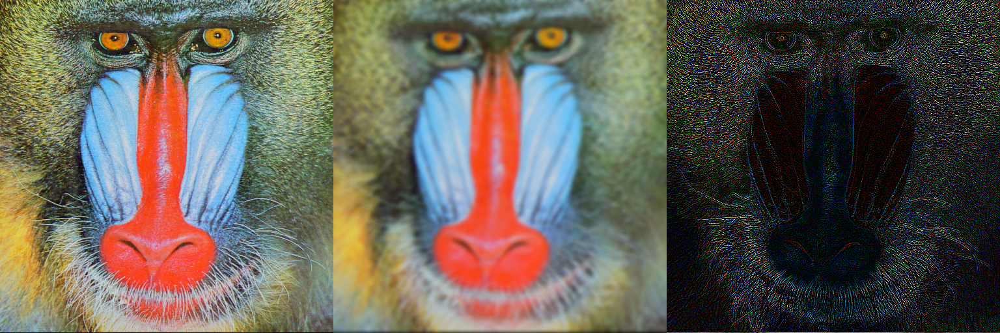

ImageFiltering.jl
ImageFiltering supports linear and nonlinear filtering operations on arrays, with an emphasis on the kinds of operations used in image processing.
The main functions provided by this package are:
| Function | Action |
|---|---|
imfilter | Filter a one, two or multidimensional array img with a kernel by computing their correlation |
imfilter! | Filter an array img with kernel kernel by computing their correlation, storing the result in imgfilt |
mapwindow | Apply a function to sliding windows of img |
mapwindow! | A variant of mapwindow with preallocated output |
imgradients | Estimate the gradient of img in the direction of the first and second dimension at all points of the image, using a kernel |
padarray | Generate a padded image from an array img and a specification border |
kernelfactors | Prepare a factored kernel for filtering. |
findlocalminima | Returns the coordinates of elements whose value is smaller than all of their immediate neighbors |
findlocalmaxima | Returns the coordinates of elements whose value is larger than all of their immediate neighbors |
Common kernels (filters) are organized in the Kernel and KernelFactors modules.
A common task in image processing and computer vision is computing image gradients (derivatives), for which there is the dedicated function imgradients.
Examples
The most commonly used function for filtering is imfilter. Here's a simple example of linear filtering:
julia> using ImageFiltering, TestImages
julia> img = testimage("mandrill");
julia> imgg = imfilter(img, Kernel.gaussian(3));
julia> imgl = imfilter(img, Kernel.Laplacian());When displayed, these three images look like this:

The padarray function can add (or remove) elements from the borders of an image, using various methods for generating any new pixels required. This example adds purple pixels on the top, left, bottom, and right edges:
julia> using ImageFiltering, TestImages
julia> img = testimage("mandrill")
julia> padarray(img, Fill(colorant"purple", (20, 40), (60, 80)))
Feature: arbitrary operations over sliding windows
This package also exports mapwindow, which allows you to pass an arbitrary function to operate on the values within a sliding window.
mapwindow has optimized implementations for some functions (currently, extrema).
Feature: automatic choice of FIR or FFT
For linear filtering with a finite-impulse response filtering, one can either choose a direct algorithm or one based on the fast Fourier transform (FFT). By default, this choice is made based on kernel size. You can manually specify the algorithm using Algorithm.FFT() or Algorithm.FIR().
Feature: Multithreading
If you launch Julia with JULIA_NUM_THREADS=n (where n > 1), then FIR filtering will by default use multiple threads. You can control the algorithm by specifying a resource as defined by ComputationalResources. For example, imfilter(CPU1(Algorithm.FIR()), img, ...) would force the computation to be single-threaded.
Feature: Models
The ImageFilter.Models submodule provides predefined image-related models and its solvers that can be reused by many image processing tasks.
For example, the solve_ROF_PD() function uses the primal-dual method to return a smoothed version of an image using Rudin-Osher-Fatemi (ROF) filtering, more commonly known as Total Variation (TV) denoising or TV regularization.